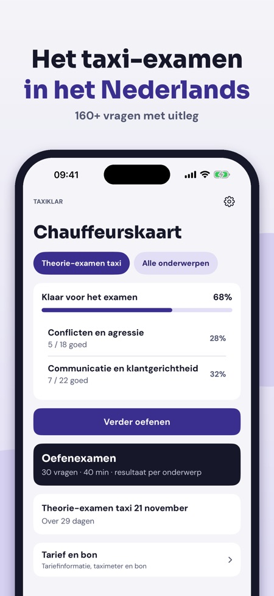
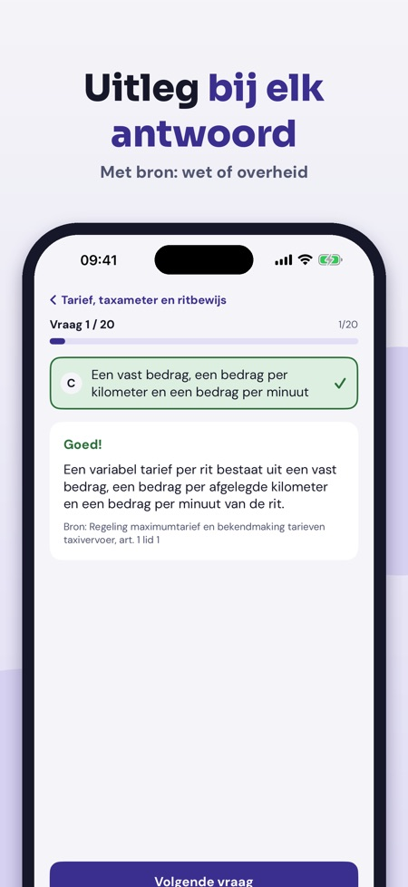
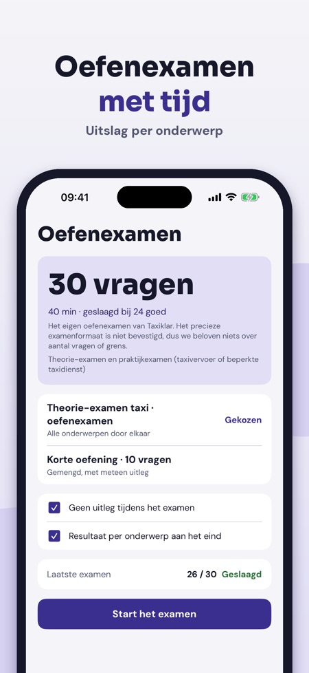

Oefen het taxi theorie-examen. Oefen voor het examen Vakbekwaamheid Taxichauffeur: vragen met uitleg, proefexamens en de regels voor tarieven – in het Nederlands.



Taxiklar helpt je oefenen voor het theorie-examen Vakbekwaamheid Taxichauffeur – met uitleg, niet alleen het goede antwoord.
Zonder aankoop gebruik je 20 vragen per land, één volledig oefenexamen, de begrippenlijst, de checklist en Tarief en bon. De volledige versie is een eenmalige aankoop die alle vragen, onbeperkt proefexamens en statistiek ontgrendelt. Geen abonnement.
Taxiklar is onafhankelijk en niet verbonden aan het CBR of de overheid. Je examen doe je bij het CBR.